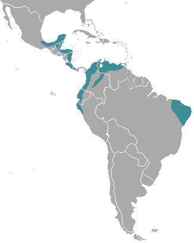

Jaratataca

Nome científico: (Conepatus semistriatus Boddaert, 1785)
Nome comum: Jaratataca, gambá-listrado.
Classificação biológica:
Domínio: Eukaryota.
Reino: Animalia.
Filo: Chordata.
Classe: Mammalia.
Ordem: Carnivora.
Família: Mephitidae.
Gênero: Conepatus.
Espécie: Conepatus semistriatus.
Nutrição: Onívoro.
Hábitos alimentares: Alimenta-se de insetos, pequenos vertebrados, frutos e matéria vegetal.
Morfologia do corpo: Possui corpo robusto, pelagem preta com faixas brancas ao longo do dorso. Mede entre 30 e 50 cm de comprimento, com uma cauda de 15 a 30 cm. Pesa entre 1 e 4 kg.
Comportamento: É um animal solitário e noturno. Quando ameaçado, libera um líquido de odor forte como mecanismo de defesa.
Principais Presas: Insetos, pequenos vertebrados e frutos.
Principais Predadores: Felinos, aves de rapina e serpentes.
Locais habitados
Distribuição: Presente nos biomas Mata Atlântica, o Cerrado e a Caatinga.
Habitat: Habita florestas, cerrados e áreas abertas, adaptando-se a ambientes modificados pelo homem.
Reprodução: A gestação dura cerca de 60 dias, resultando em ninhadas de 2 a 5 filhotes, que permanecem com a mãe por alguns meses.